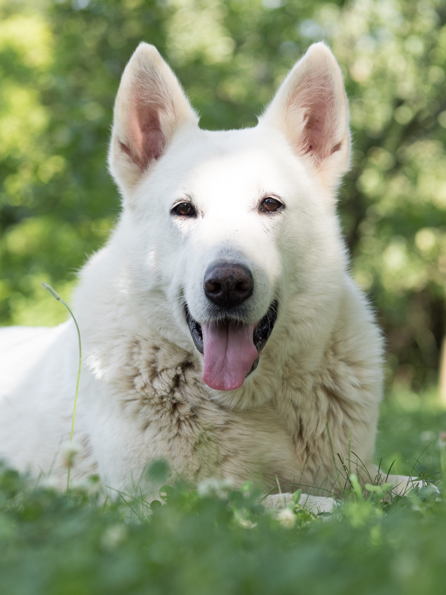
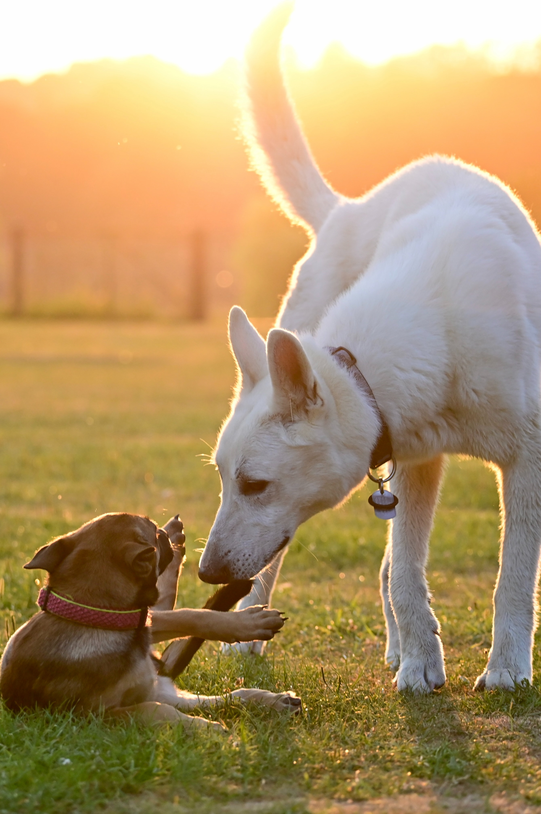

About Us
“People have been asking me if I was going to have kids, and I had puppies instead.” – Kate Jackson
Hi, I'm Jingzhi! I am so happy you found me!
 Welcome to the enchanting world of the White Swiss Shepherd, where elegance and intelligence converge in a breed that captivates hearts around the globe. As a devoted breeder, my passion for these magnificent canines has driven me to dedicate my life to preserving and perfecting this remarkable breed. The White Swiss Shepherd, often referred to as the "Berger Blanc Suisse," is a breed that epitomizes beauty, grace, and versatility. Originating from the noble German Shepherd lineage, these dogs boast an impressive combination of physical prowess and unwavering loyalty. Their striking, snow-white coats glisten in the sunlight, evoking an aura of purity and distinction. What sets the White Swiss Shepherd apart is not only their striking appearance but also their exceptional intelligence and unwavering devotion to their human companions. Bred for their intelligence and working ability, these dogs excel in various roles, from loyal family protectors to skilled search and rescue partners. As a breeder, my mission is to uphold the breed's integrity, ensuring that every White Swiss Shepherd I raise embodies the breed's finest qualities. Through careful selection of breeding pairs, health screening, and nurturing, I strive to produce puppies that are not only physically sound but also possess the temperament and intelligence that are the hallmark of the White Swiss Shepherd. Join me on a journey into the world of the White Swiss Shepherd, where the bond between breeder and dog is forged in a shared commitment to excellence, and where these magnificent creatures continue to enchant us with their beauty and grace.
 I make myself available to all of my buyers and potential buyers at almost any time and offer lifetime support. Texting/Emailing will get you the quickest response. I have made friendships with most of my buyers who I am so appreciative that they send me regular updates. Just because a pup of ours goes to a new home doesn’t mean we forget about them. We think about them all the time and are so grateful whenever we hear from their new families. I feel very blessed and I thank you for visiting my website and for considering adopting a puppy from us. We’d love to have you join our family!